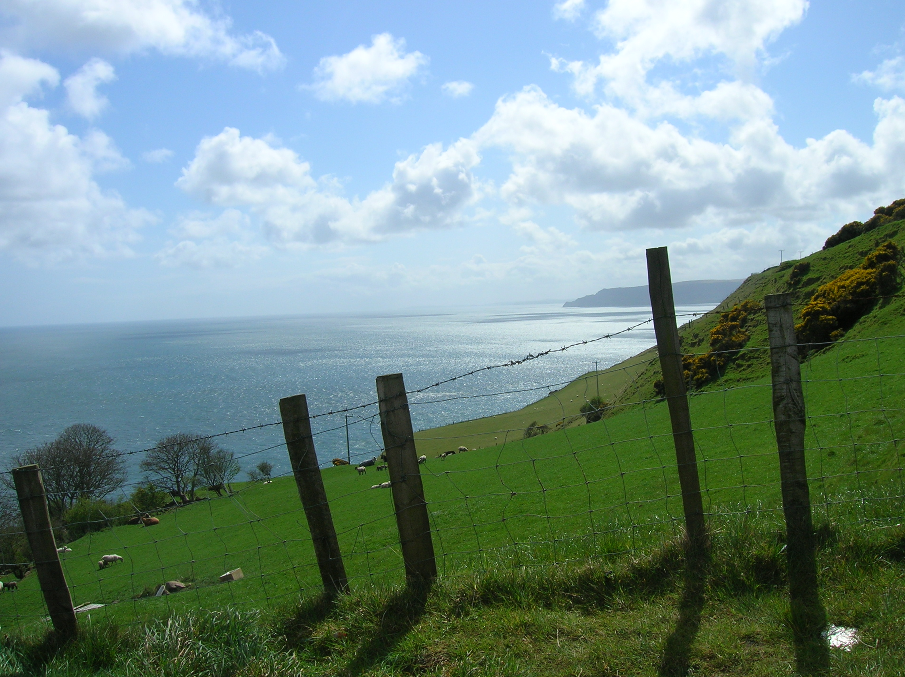

About Us
Classic, yet stunningly contemporary, its minimalist decor provides a chic, stylish setting to accentuate the individuality of its customers. Large enough to seat up to 60 people in spacious comfort and yet maintain an intimate and friendly atmosphere. The extensive menu embraces both the traditional and the unexpected, and delights those who not only appreciate excellence but also prize value. The restaurant offers superior Irish cuisine with emphasis on in-season local produce and ocean fresh seafood from the nearby Atlantic coast. More Information...